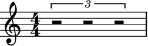
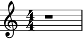
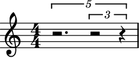
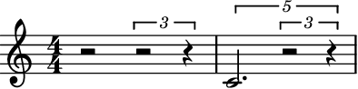
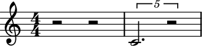
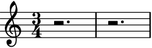

auxjad.remove_empty_tuplets¶
-
auxjad.remove_empty_tuplets(container: abjad.core.Container.Container)¶ Mutates an input container (of type
abjad.Containeror child class) in place and has no return value; this function looks for tuplets filled with rests and replaces them with a single rest.- Example:
Usage is simple:
>>> container = abjad.Container(r"\times 2/3 {r2 r2 r2}") >>> abjad.f(container) { \times 2/3 { r2 r2 r2 } }
>>> auxjad.remove_empty_tuplets(container) >>> abjad.f(container) { r1 }
It also works with containers with tuplets within tuplets.
>>> container = abjad.Container(r"\times 4/5 {r2. \times 2/3 {r2 r4}}") >>> abjad.f(container) { \times 4/5 { r2. \times 2/3 { r2 r4 } } }
>>> auxjad.remove_empty_tuplets(container) >>> abjad.f(container) { r1 }

This function also simplifies a mix of tuplets of rests and tuplets with notes.
>>> container = abjad.Container( ... r"r2 \times 2/3 {r2 r4} \times 4/5 {c'2. \times 2/3 {r2 r4}}") >>> abjad.f(container) { r2 \times 2/3 { r2 r4 } \times 4/5 { c'2. \times 2/3 { r2 r4 } } }
>>> auxjad.remove_empty_tuplets(container) >>> abjad.f(container) { r2 r2 \times 4/5 { c'2. r2 } }

Tip
Use
auxjad.rests_to_multimeasure_rest()to replace bars filled with rests by a single multi-measure rest. That function makes use ofremove_empty_tuplets(), so it is not necessary to flatten the empty tuplets beforehand.- Example:
Works with measures with any time signature.
>>> container = abjad.Container(r"\time 3/4 r2. \times 3/2 {r4 r4}") >>> auxjad.remove_empty_tuplets(container) >>> abjad.f(container) { %%% \time 3/4 %%% r2. r2. }

Note
Notice that the time signatures in the output are commented out with
%%%. This is because Abjad only applies time signatures to containers that belong to aabjad.Staff. The present function works with eitherabjad.Containerandabjad.Staff.>>> container = abjad.Container(r"\time 3/4 r2. \times 3/2 {r4 r4}") >>> auxjad.remove_empty_tuplets(container) >>> abjad.f(container) { %%% \time 3/4 %%% r2. r2. } >>> staff = abjad.Staff([container]) >>> abjad.f(container) { \time 3/4 r2. r2. }
Warning
The input container must be a contiguous logical voice. When dealing with a container with multiple subcontainers (e.g. a score containings multiple staves), the best approach is to cycle through these subcontainers, applying this function to them individually.